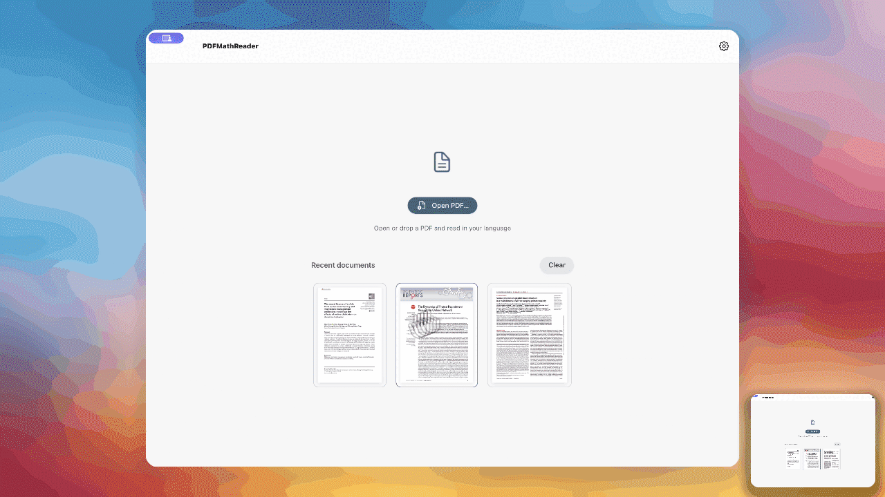
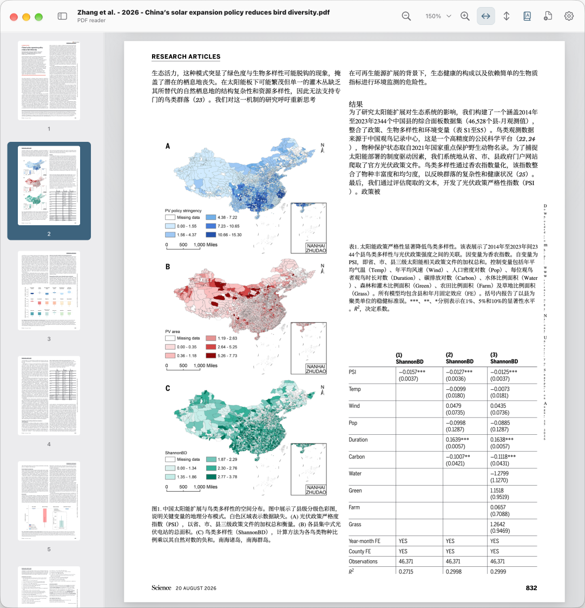
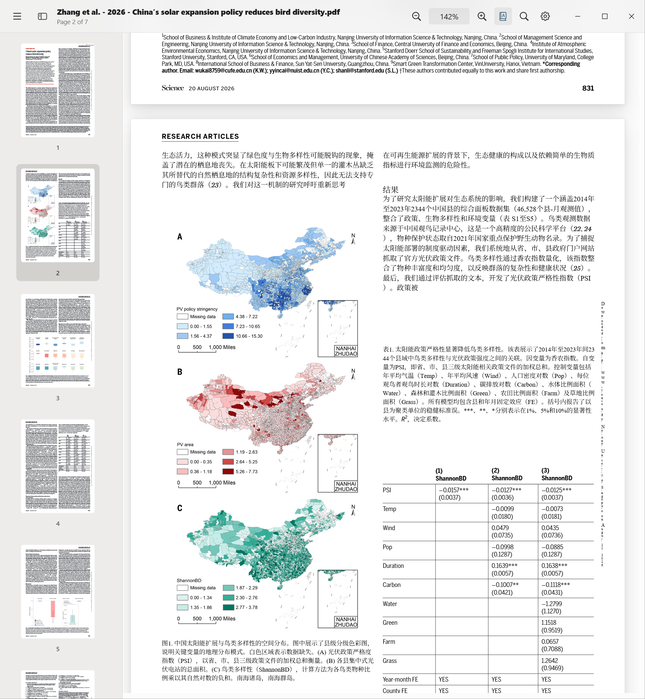
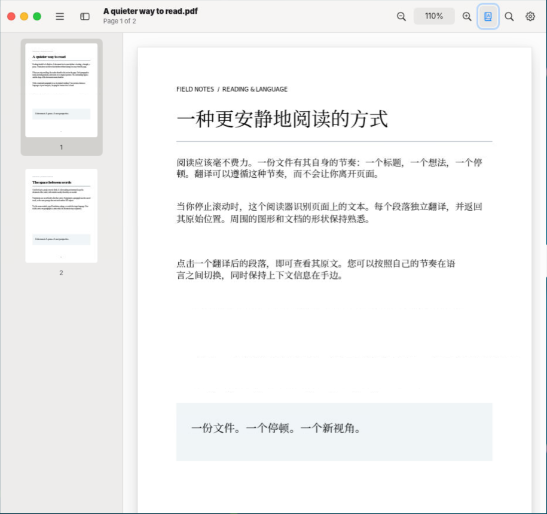

A smooth PDF reader with realtime translation that keeps formulas, tables and layout intact. Powered by PDFMathTranslate.
Download View on GitHub
Try it: switch layouts, zoom and scroll direction. Pages and thumbnails are virtualized, so large documents stay fast.
Translation runs for nearby pages while you read — no waiting for the whole document. Click any detected paragraph to flip between original and translation.
One, two or four pages; vertical or horizontal scrolling.
Jump anywhere instantly and fit pages to your screen.
Click paragraphs to compare original and translation.
Record notes directly on the page.
Bidirectional links between search results and where you read them.
Independent windows restore position and display settings.



Rendering, layout analysis and translation run independently, so reading is never blocked.
PDF is uploaded once to a local backend and referenced by ID.
PDF.js draws visible pages only (virtualized).
Paragraphs, formulas and tables are detected on demand.
Nearby pages are translated and cached; stale work is cancelled.
Translated text is placed back in the original layout.
Geometric paragraph grouping with text overlays.
Math translation kernels installed through uv.
Identical requests reuse saved results across documents and restarts.
Explore a preview of the settings window.